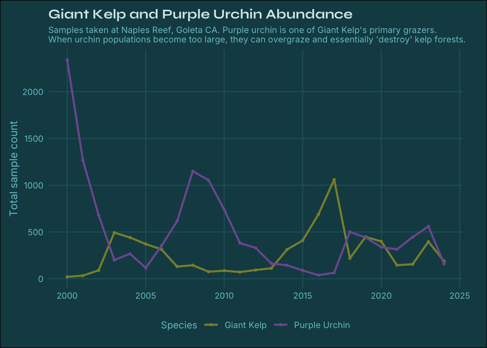
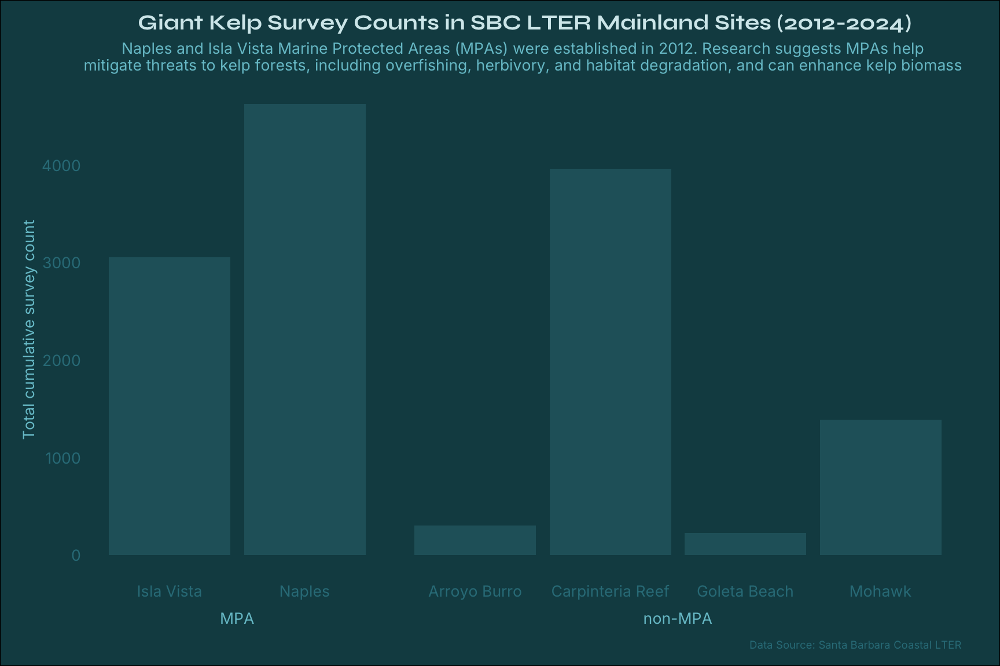

# Import fonts font_add_google(name ="Syne", family ="syne")font_add_google(name ="Inter", family ="inter")
Plan for final visualization
Which option do you plan to pursue? It’s okay if this has changed since HW #1.
Restate your question(s). Has this changed at all since HW #1? If yes, how so?
Explain which variables from your data set(s) you will use to answer your question(s), and how.
In HW #2, you created some exploratory data viz to better understand your data. You may already have some ideas of how you plan to formally visualize your data, but it’s incredibly helpful to look at visualizations by other creators for inspiration. Find at least two data visualizations that you could (potentially) borrow / adapt pieces from. Link to them or download and embed them into your .qmd file, and explain which elements you might borrow (e.g. the graphic form, legend design, layout, etc.).
Hand-draw your anticipated visualizations, then take a photo of your drawing(s) and embed it in your rendered .qmd file – note that these are not exploratory visualizations, but rather your plan for your final visualizations that you will eventually polish and submit with HW #4. You should have: a sketch of your infographic (which should include at least three component visualizations) if you are pursuing option 1
Mock up all of your hand drawn visualizations using code. We understand that you will continue to iterate on these into HW #4 (particularly after receiving feedback), but by the end of HW #3, you should:
have your data plotted (if you’re experimenting with a graphic form(s) that was not explicitly covered in class, we understand that this may take some more time to build; you should have as much put together as possible)
use appropriate strategies to highlight / focus attention on a clear message
include appropriate text such as titles, captions, axis labels
experiment with colors and typefaces / fonts
create a presentable / aesthetically-pleasing theme (e.g. (re)move gridlines / legends as appropriate, adjust font sizes, etc.)
Fonts for plots - Titles = Syne - plot font = Inter
# Read in SBC LTER datasets kelp_all <-read_csv(here::here('data', 'Annual_Kelp_All_Years_20240823.csv'))
Rows: 30355 Columns: 25
── Column specification ────────────────────────────────────────────────────────
Delimiter: ","
chr (17): SITE, SIDE, SP_CODE, OBS_CODE, NOTES, SCIENTIFIC_NAME, COMMON_NAM...
dbl (7): YEAR, MONTH, TRANSECT, QUAD, FRONDS, HLD_DIAM, AREA
date (1): DATE
ℹ Use `spec()` to retrieve the full column specification for this data.
ℹ Specify the column types or set `show_col_types = FALSE` to quiet this message.
Rows: 440016 Columns: 23
── Column specification ────────────────────────────────────────────────────────
Delimiter: ","
chr (15): SITE, SIDE, SP_CODE, SCIENTIFIC_NAME, COMMON_NAME, TAXON_KINGDOM,...
dbl (7): YEAR, MONTH, TRANSECT, QUAD, SIZE, COUNT, AREA
date (1): DATE
ℹ Use `spec()` to retrieve the full column specification for this data.
ℹ Specify the column types or set `show_col_types = FALSE` to quiet this message.
Rows: 98068 Columns: 24
── Column specification ────────────────────────────────────────────────────────
Delimiter: ","
chr (15): SITE, SIDE, SP_CODE, SCIENTIFIC_NAME, COMMON_NAME, TAXON_KINGDOM,...
dbl (8): YEAR, MONTH, TRANSECT, QUAD, VIS, SIZE, COUNT, AREA
date (1): DATE
ℹ Use `spec()` to retrieve the full column specification for this data.
ℹ Specify the column types or set `show_col_types = FALSE` to quiet this message.
Rows: 409 Columns: 24
── Column specification ────────────────────────────────────────────────────────
Delimiter: ","
chr (24): SP_CODE, SCIENTIFIC_NAME, COMMON_NAME, ADULT, SIZE, SIZE_MIN_REF, ...
ℹ Use `spec()` to retrieve the full column specification for this data.
ℹ Specify the column types or set `show_col_types = FALSE` to quiet this message.
# Clean kelp data kelp_clean <- kelp_all |>filter(SITE !="SCDI"& SITE !="SCTW") |> naniar::replace_with_na(replace =list(FRONDS =-99999)) |> naniar::replace_with_na(replace =list(HLD_DIAM =-99999)) |> janitor::clean_names()# Clean invert data invert_clean <- invert_all |>filter(SITE !="SCDI"& SITE !="SCTW") |> naniar::replace_with_na(replace =list(SIZE =-99999)) |> janitor::clean_names()# Clean fish data fish_clean <- fish_all |>filter(SITE !="SCDI"& SITE !="SCTW") |> naniar::replace_with_na(replace =list(SIZE =-99999)) |> naniar::replace_with_na(replace =list(COUNT =-99999)) |> janitor::clean_names()# Purple Urchins purp_urchin <- invert_clean |>filter(scientific_name =="Strongylocentrotus purpuratus") # Spiny lobsterslobster <- invert_clean |>filter(scientific_name =="Panulirus interruptus")# CA sheepheadsheephead <- fish_clean |>filter(scientific_name =="Semicossyphus pulcher")
plot of kelp and urchin in naples
#.......................Prep data for plot.......................# Filter to NAPL and group by year kelp_total_count_NAPL <- kelp_clean |>filter(site =="NAPL") |>group_by(year) |>summarise(total_count =n()) |>mutate(species ="Giant Kelp")# Filter to NAPL urchin_total_count_NAPL <- purp_urchin |>filter(site =="NAPL") |>group_by(year) |>summarise(total_count =sum(count)) |>mutate(species ="Purple Urchin")# Bind rowsnapl_spp <-bind_rows(kelp_total_count_NAPL, urchin_total_count_NAPL)
#.......................Plot spp over time.......................ggplot(napl_spp, aes(x = year, y = total_count, color = species)) +# timeseries plot geom_point(size =0.4) +geom_line() +scale_color_manual(values =c("Giant Kelp"="#8A8E3A","Purple Urchin"="#7E5AA0")) +# labels labs(title ="Giant Kelp and Purple Urchin Abundance",subtitle ="Samples taken at Naples Reef, Goleta CA. Purple urchin is one of Giant Kelp's primary grazers. \nWhen urchin populations become too large, they can overgraze and essentially 'destroy' kelp forests.",color ="Species",x =NULL,y ="Total sample count" ) +# theme elements theme_minimal() +theme(# plot text plot.title =element_text(size =14, face ="bold", family ="syne", color = kelp_pal["title"]), plot.subtitle =element_text(size =9, family ="inter", color = kelp_pal["sub"]), axis.title =element_text(family ="inter", color = kelp_pal["sub"]),axis.text =element_text(family ="inter", color = kelp_pal["sub"]),# legend legend.title =element_text(size =10, family ="inter", color = kelp_pal["sub"]), legend.text =element_text(size =9, family ="inter", color = kelp_pal["sub"]), legend.position ="bottom", # Move the legend to the bottom# background color + grid plot.background =element_rect(fill = kelp_pal["background"]),panel.grid.major =element_line(color = kelp_pal["sub3"]),panel.grid.minor =element_blank(), # remove minor grid lines # adjust margins plot.margin =margin(10, 25, 10, 10) # Top, Right, Bottom, Left )

Need to increase margin
# Filter to years larger than equal to 2006, can graph all three species kelp_2006 <- kelp_clean |>group_by(year) |>summarise(total_count =n()) |>mutate(species ="Giant Kelp") |>filter(year >=2006)urchin_2006 <- purp_urchin |>group_by(year) |>summarise(total_count =sum(count)) |>mutate(species ="Purple Urchin") |>filter(year >=2006)lobster_2006 <- lobster |>group_by(year) |>summarise(total_count =sum(count)) |>mutate(species ="Spiny Lobster") |>filter(year >=2006)sheephead_2006 <- sheephead |>group_by(year) |>summarise(total_count =sum(count)) |>mutate(species ="Sheephead") |>filter(year >=2006)# Combine spp_all_2006 <-bind_rows(kelp_2006, urchin_2006, lobster_2006, sheephead_2006)
2. Kelp densities at the sites
Sites to keep: NAPL, IVEE, GOLB, ABUR, MOHK, CARP
kelp_bar <- kelp_clean |>filter(site %in%c('NAPL', 'IVEE', 'GOLB', 'ABUR', 'MOHK', 'CARP')) |>filter(year >=2012) |>group_by(site, year) |>summarise(total_count =n()) |>mutate(protection =case_when( site %in%c("GOLB", "ABUR", "MOHK", "CARP") ~"non-MPA", site %in%c("NAPL", "IVEE") ~"MPA")) |>mutate(site_name =case_when(site =="GOLB"~"Goleta Beach", site =="ABUR"~"Arroyo Burro", site =="MOHK"~"Mohawk", site =="CARP"~"Carpinteria Reef", site =="NAPL"~"Naples", site =="IVEE"~"Isla Vista"))
`summarise()` has grouped output by 'site'. You can override using the
`.groups` argument.
#..............Bar plot of kelp abundance per LTER site......................barplot <-ggplot(kelp_bar, aes(x = site_name, y = total_count, label = protection)) +# bar plot separated by protection level geom_col(fill = kelp_pal["sub3"]) +facet_grid(~ protection, scales="free", space ="free", switch ="x") +# labels labs(x =NULL, y ="Total cumulative survey count", title ="Giant Kelp Survey Counts in SBC LTER Mainland Sites (2012-2024)",subtitle ="Naples and Isla Vista Marine Protected Areas (MPAs) were established in 2012. Research suggests MPAs help \nmitigate threats to kelp forests, including overfishing, herbivory, and habitat degradation, and can enhance kelp biomass ",caption ="Data Source: Santa Barbara Coastal LTER") +# theme elements theme_minimal () +theme(# strip titles strip.background =element_blank(),strip.placement ="outside", # remove grid lines panel.grid.major =element_blank(),panel.grid.minor =element_blank(),# text elements plot.title =element_text(family ="syne", face ="bold", size =14, color = kelp_pal["title"], hjust =0.5), plot.subtitle =element_text(family ="inter", size =10, color = kelp_pal["sub"], hjust =0.5),plot.caption =element_text(family ="inter", size =7, color = kelp_pal["sub2"]),axis.title.y =element_text(family ="inter", size =10, color = kelp_pal["sub"]),axis.text.x =element_text(family ="inter", size =10, color = kelp_pal["sub2"]),axis.text.y =element_text(family ="inter", size =10, color = kelp_pal["sub2"]), strip.text =element_text(family ="inter", face ="bold", size =10, color = kelp_pal["sub"]), # panel background color plot.background =element_rect(fill = kelp_pal["background"]), # adjust margins plot.margin =margin(10, 25, 10, 15) # Top, Right, Bottom, Left )# ggsave(# filename = here::here("plots", "kelp_barplot.png"),# plot = barplot,# device = "png",# width = 9,# height = 6,# unit = "in")barplot

Answer the following questions:
What challenges did you encounter or anticipate encountering as you continue to build / iterate on your visualizations in R? If you struggled with mocking up any of your three visualizations (from #6, above), describe those challenges here.
What ggplot extension tools / packages do you need to use to build your visualizations? Are there any that we haven’t covered in class that you’ll be learning how to use for your visualizations?
What feedback do you need from the instructional team and / or your peers to ensure that your intended message is clear?